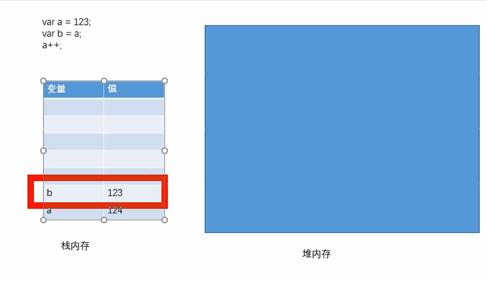
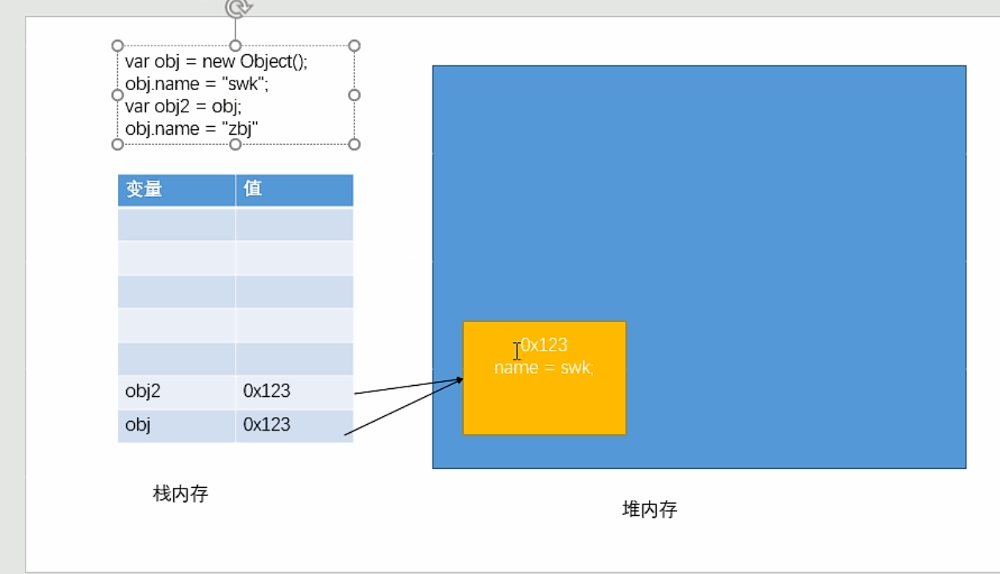
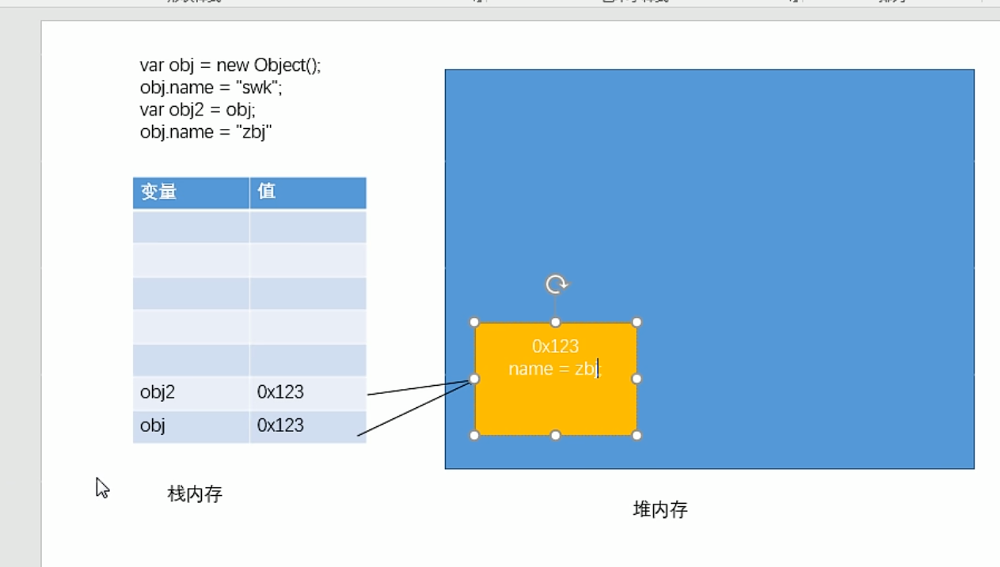
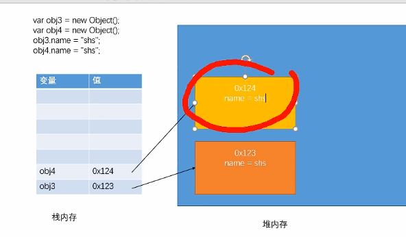

*JS中的变量都是保存到栈内存中的， 基本数据类型的值直接在栈内存中存储， 值与值之间是独立存在，修改一个变量不会影响其他的变量

*对象是保存到堆内存中的，每创建一个新的对象，就会在堆内存中开辟出一个新的空间，
而变量保存的是对象的内存地址
(对象的引用，如果两个变量保存的是同一个对象引用，当一个通过一个变量修改属性时，另一个也会受到影响)
 
*而比较两个引用数据类型时，它是比较的对象的内存地址，
如果两个对象是一摸一样的，但是地址不同，它也会返回false
